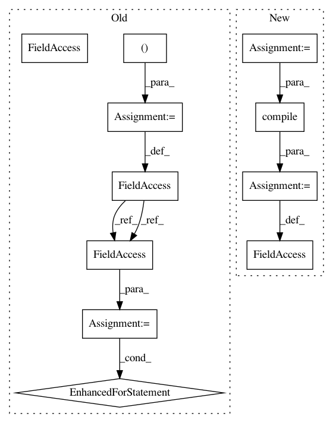

9572a68b8832a09f716017742fbd3b4f1da3d131,scripts/cpp_lint.py,,,#,4269
Before Change
return True
_HEADERS_CONTAINING_TEMPLATES = (
("<deque>", ("deque",)),
("<functional>", ("unary_function", "binary_function",
"plus", "minus", "multiplies", "divides", "modulus",
"negate",
"equal_to", "not_equal_to", "greater", "less",
"greater_equal", "less_equal",
"logical_and", "logical_or", "logical_not",
"unary_negate", "not1", "binary_negate", "not2",
"bind1st", "bind2nd",
"pointer_to_unary_function",
"pointer_to_binary_function",
"ptr_fun",
"mem_fun_t", "mem_fun", "mem_fun1_t", "mem_fun1_ref_t",
"mem_fun_ref_t",
"const_mem_fun_t", "const_mem_fun1_t",
"const_mem_fun_ref_t", "const_mem_fun1_ref_t",
"mem_fun_ref",
)),
("<limits>", ("numeric_limits",)),
("<list>", ("list",)),
("<map>", ("map", "multimap",)),
("<memory>", ("allocator",)),
("<queue>", ("queue", "priority_queue",)),
("<set>", ("set", "multiset",)),
("<stack>", ("stack",)),
("<string>", ("char_traits", "basic_string",)),
("<utility>", ("pair",)),
("<vector>", ("vector",)),
// gcc extensions.
// Note: std::hash is their hash, ::hash is our hash
("<hash_map>", ("hash_map", "hash_multimap",)),
("<hash_set>", ("hash_set", "hash_multiset",)),
("<slist>", ("slist",)),
)
_RE_PATTERN_STRING = re.compile(r"\bstring\b")
_re_pattern_algorithm_header = []
for _template in ("copy", "max", "min", "min_element", "sort", "swap",
"transform"):
// Match max<type>(..., ...), max(..., ...), but not foo->max, foo.max or
// type::max().
_re_pattern_algorithm_header.append(
(re.compile(r"[^>.]\b" + _template + r"(<.*?>)?\([^\)]"),
_template,
"<algorithm>"))
_re_pattern_templates = []
for _header, _templates in _HEADERS_CONTAINING_TEMPLATES:
for _template in _templates:
_re_pattern_templates.append(
(re.compile(r"(\<|\b)" + _template + r"\s*\<"),
_template + "<>",
_header))
def FilesBelongToSameModule(filename_cc, filename_h):
Check if these two filenames belong to the same module.
The concept of a "module" here is a as follows:
After Change
// | [^<>] )*
// >
_RE_PATTERN_IDENT = r"[_a-zA-Z]\w*" // =~ [[:alpha:]][[:alnum:]]*
_RE_PATTERN_TYPE = (
r"(?:const\s+)?(?:typename\s+|class\s+|struct\s+|union\s+|enum\s+)?"
r"(?:\w|"
r"\s*<(?:<(?:<[^<>]*>|[^<>])*>|[^<>])*>|"
r"::)+")
// A call-by-reference parameter ends with "& identifier".
_RE_PATTERN_REF_PARAM = re.compile(
r"(" + _RE_PATTERN_TYPE + r"(?:\s*(?:\bconst\b|[*]))*\s*"
r"&\s*" + _RE_PATTERN_IDENT + r")\s*(?:=[^,()]+)?[,)]")
// A call-by-const-reference parameter either ends with "const& identifier"
// or looks like "const type& identifier" when "type" is atomic.
_RE_PATTERN_CONST_REF_PARAM = (
r"(?:.*\s*\bconst\s*&\s*" + _RE_PATTERN_IDENT +
In pattern: SUPERPATTERN
Frequency: 3
Non-data size: 11
Instances
Project Name: BVLC/caffe
Commit Name: 9572a68b8832a09f716017742fbd3b4f1da3d131
Time: 2014-08-12
Author: jeff.donahue@gmail.com
File Name: scripts/cpp_lint.py
Class Name:
Method Name:
Project Name: BVLC/caffe
Commit Name: 16176a2d3e934528c1b6a4c80d0fc53c86ec5933
Time: 2014-04-22
Author: jeff.donahue@gmail.com
File Name: scripts/cpp_lint.py
Class Name:
Method Name:
Project Name: hellohaptik/chatbot_ner
Commit Name: 34f14dac8d65ffd6210a87a610afad1593d47294
Time: 2019-06-18
Author: jain.chirag925@gmail.com
File Name: ner_v1/detectors/numeral/budget/budget_detection.py
Class Name: BudgetDetector
Method Name: __init__
Project Name: BVLC/caffe
Commit Name: 9572a68b8832a09f716017742fbd3b4f1da3d131
Time: 2014-08-12
Author: jeff.donahue@gmail.com
File Name: scripts/cpp_lint.py
Class Name:
Method Name: